✎
Visual Arts
Pencil portraits, drawings and traditional artwork created through observation, patience and imagination.
VIEW ARTWORKAN INDEPENDENT MALAWIAN CREATIVE BRAND
A creative home for visual art, design, cartoons and storytelling. Explore the work and ideas of Lloyd Kampira.
Loy Kay Arts is the creative platform of Lloyd Kampira. It brings together different forms of artistic expression — from pencil drawings and graphic design to original cartoons, short stories and other creative projects.
Each work begins with an idea. This is where those ideas take shape and find their way into the world.
Different forms of creativity, brought together under one roof. This portfolio will grow as new work is added.
Pencil portraits, drawings and traditional artwork created through observation, patience and imagination.
VIEW ARTWORKPosters, branding, visual communication and design concepts for different ideas and projects.
DESIGN ENQUIRIESOriginal characters, illustrations, African humour and stories told through cartoons.
MEET JAKANUZAOriginal fiction, reflections and imaginative storytelling. A space for words, characters and ideas.
EXPLORE STORIESHandmade creations, experiments and ideas that explore creativity beyond the page and canvas.
DISCOVER MOREExplore original artwork by Loy Kay Arts, including available pieces and selected commissioned works.
Original artworks by Loy Kay Arts. Each piece carries its own story, inspiration and artistic expression.

2026 · LOY KAY ARTS
USD $500 (Negotiable)
This artwork explores desire, choices and the things that catch our attention in life.
The black and white lady represents everyday life, while the bright red cherries symbolise dreams, opportunities and the things we want to reach for.
The water drops add a sense of freshness and life. The woman's gaze and hand capture a moment of curiosity and decision: seeing something attractive and deciding whether to pursue it.
This piece reminds us that life is full of opportunities, and every choice we make helps shape our journey.
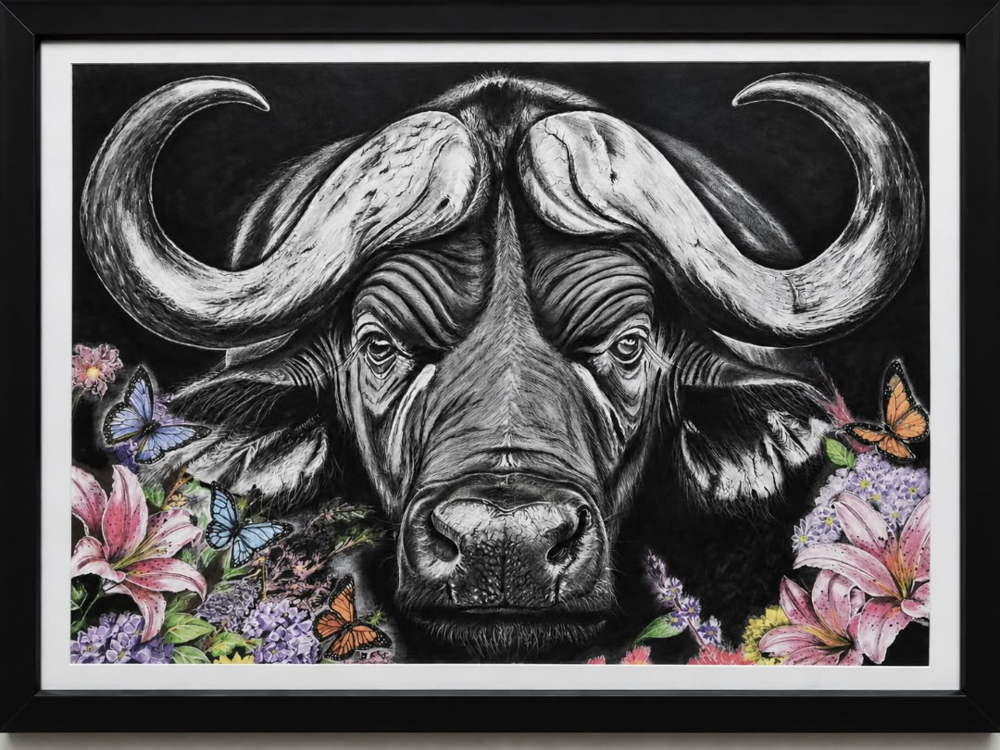
2026 · LOY KAY ARTS
USD $1,000 (Negotiable)
This art draws inspiration from the commanding presence of the buffalo (Njati in Malawi). Known for its powerful appearance and grounded nature, it represents strength, resilience and a quiet sense of authority.
It is presented in black and white, allowing its highly detailed features, expression and natural character to take centre stage.
In contrast, the butterflies and flowers burst into colour, introducing beauty of life.
The meeting of monochrome and colour creates a visual conversation between strength and gentleness, power and beauty, and the wild spirit of nature.
It is a reminder that true strength does not always need to be loud. Sometimes, it is found in quiet presence and the ability to coexist with the beauty around us.
A collection of completed artworks created for clients and special requests.
ENQUIRE ABOUT COMMISSIONED ARTWORKS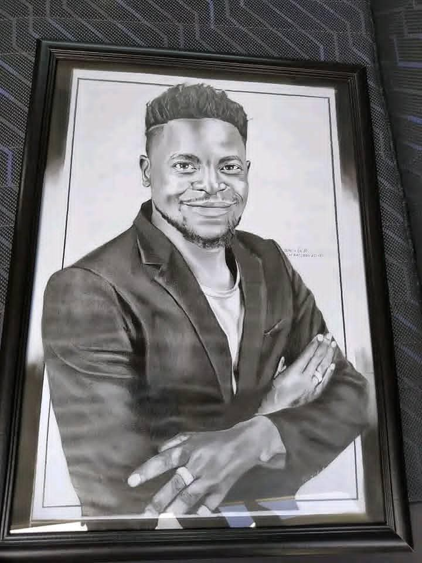
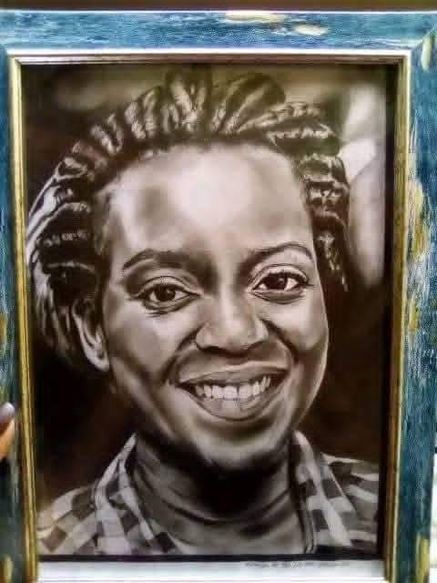
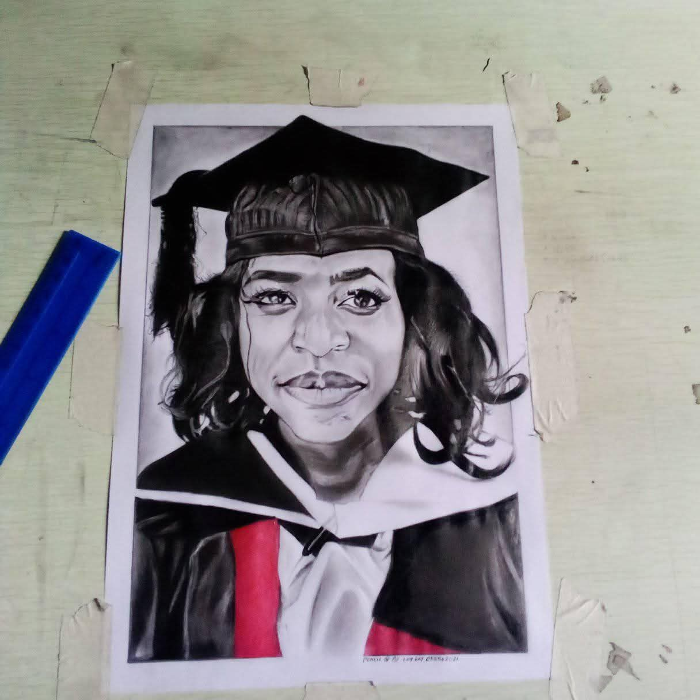
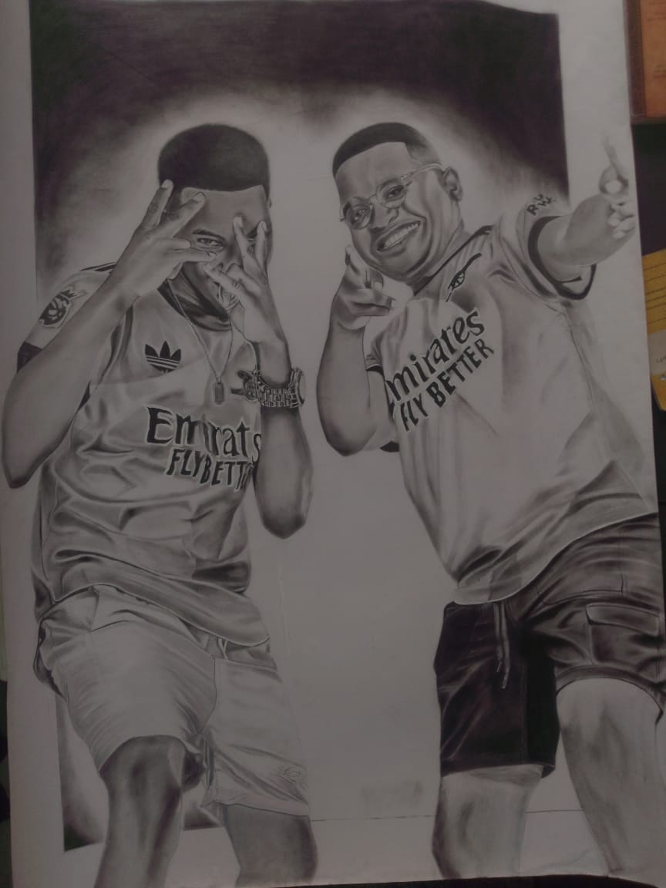
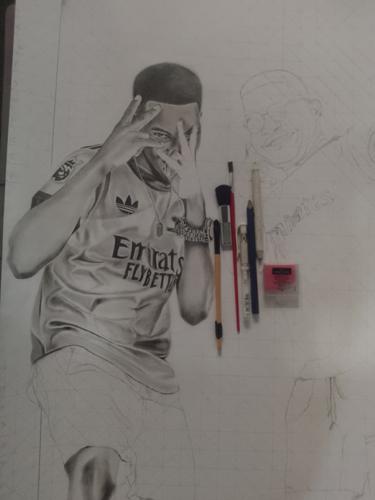
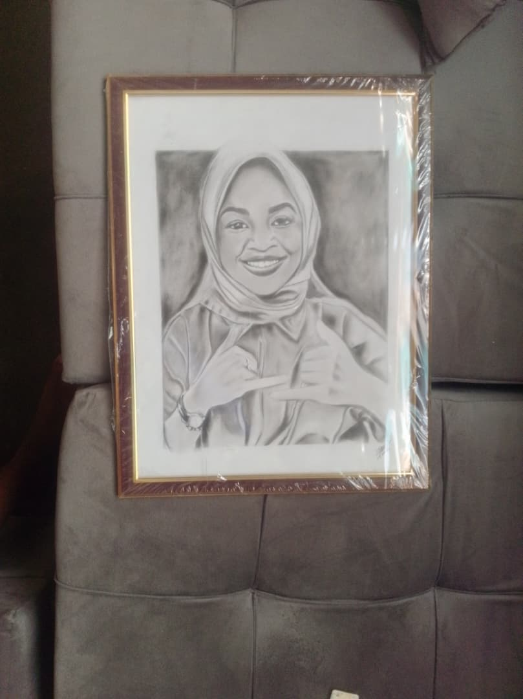
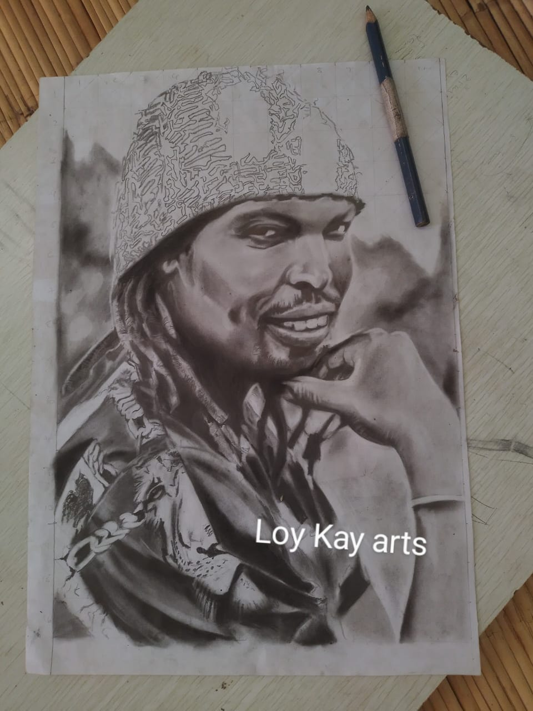
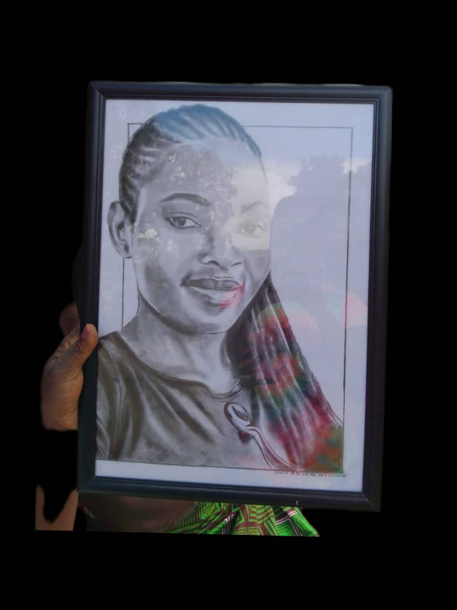
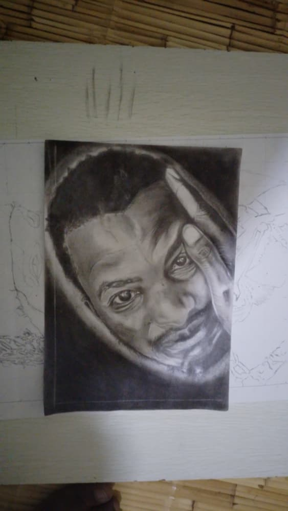
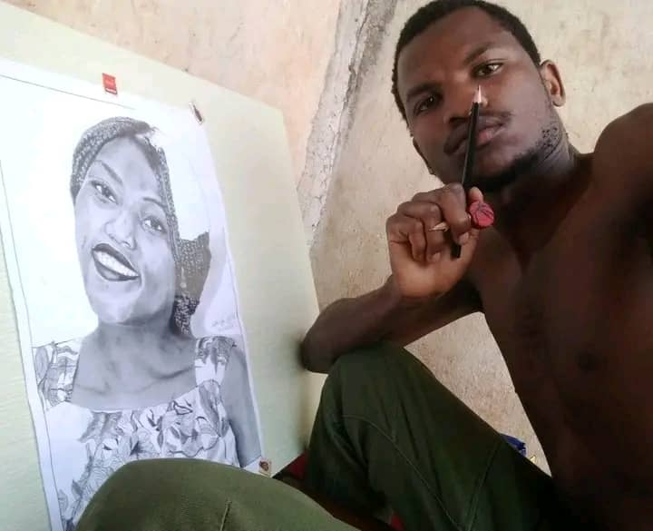
Jakanuza is an original African cartoon series created by Lloyd Kampira. Through humour, satire and storytelling, it explores African culture, everyday life and the funny moments that connect people.
Laugh. Think. Connect.
READ EPISODE 1Stories made of imagination, observation and the little details of everyday life.
The person and the story behind Loy Kay Arts.

Artist · Cartoonist · Designer · Storyteller
He is a Malawian artist whose creative journey began in childhood. Like many children, he started drawing alongside his peers, but his interest soon grew beyond that. During primary school at Ndirande Kachere, he would find himself drawing on the classroom blackboard for teachers during lessons.
After school, the evenings were often filled with stories. He and other boys would gather to share jokes, movie stories and experiences from everyday life. Those simple moments of imagination and storytelling helped shape the artist he is today.
Over the years, that childhood passion has grown into a desire to share his creativity with the world. Along the way, he has taken on voluntary creative projects for notable Malawian personalities, including Pemphero Wamwale Mphande and Francis Kalawe, and participated in the Football Association of Malawi's jersey design competition, among other opportunities.
Through Loy Kay Arts, he now brings together visual art, graphic design, cartoons, short stories and more. The journey continues, with one simple purpose: to turn ideas and imagination into creative experiences that people can see, feel and connect with.
For artwork, design enquiries and creative collaborations, please connect through Loy Kay Arts' contact details and social media pages.
Email: lloydkampira@gmail.com
Phone: +265 993 169 473
Facebook: Visit Loy Kay Arts on Facebook
Location: Namcholi, Blantyre, Malawi